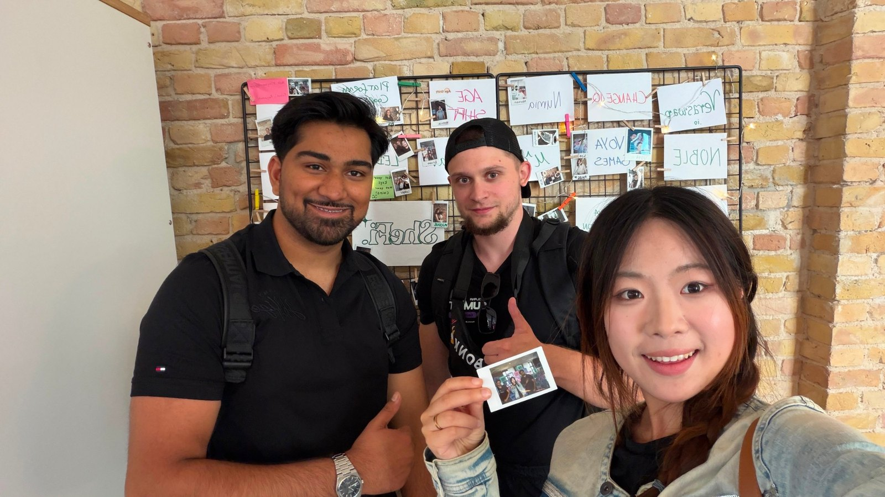

The day the RoboPay team first met
On 10 July, Yashdeep, Kevin and Xinyan met in person for the first time and started talking about working together as one team.

On 10 July the three of us, Kevin, Xinyan and Yashdeep, met in one place for the first time. We took a selfie, we talked, and we started to discuss what it would look like to work together as a team.
Two friends since seventh grade
Kevin and Yashdeep have known each other since the seventh grade. That is a long time to know someone, and it makes it easier to be direct with each other when a project gets hard. Kevin is Head of Customer Success at Staex and leads RoboPay’s technical side. Yashdeep studies Digital Business at BHT Berlin and works on business development and market research.
Meeting Xinyan
That day we also met Xinyan in person. She studies industrial engineering in a dual degree between Tongji University and HTW Berlin, and she works on hardware and mechatronics. A payment layer for machines needs a machine that actually drives, and that is where her hardware work comes in.
Why this mix matters
RoboPay connects three things: a payment that holds up, a machine that works, and a reason for someone to use it. Kevin covers the technical side, from the Solana escrow to the connection with peaq and Staex. Xinyan builds the hardware the car runs on. Yashdeep looks at the market and at what people actually want from a delivery robot. None of the three parts works well alone.
What came next
Today RoboPay runs as a working prototype: a PiCar-X delivery car that gets paid from a Solana escrow once it proves it delivered a parcel. Prof. Dr. Alexandra Mikityuk from HTW Berlin supervises the work as part of the Machine Economy Lab. A little more than three months after this photo, on 26 October, RoboPay won first place in the peaq track at the Crypto World’s Fair Hackathon. You can read about it in RoboPay wins the peaq track at Crypto World’s Fair.
We are still a research group working toward a startup. If you want to know who we are, you can meet the team or follow us on X.